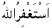
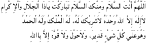
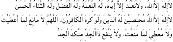
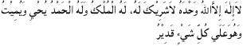
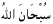
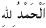
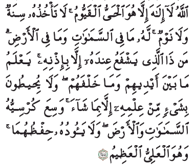
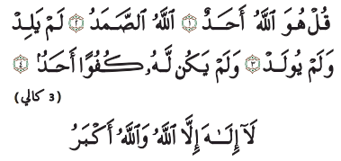

Dari Abdul Aziz bin Abdillah bin Baz kepada seluruh orang yang melihat tulisan ini dari kalangan kaum muslimin Merupakan dari perbuatan sunnah, seorang muslim mengucapkan setelah setiap shalat fardu membaca  ASTAGHFIRULLAH tiga kali, kemudian dilanjutkan dengan:

ALLAHUMMA ANTAS SALAAM WA MINKAS SALAAM TABAARAKTA YAA DZAL JALAALI WAL IKRAAM, LAA ILAAHA ILLALLAHU WAHDAHU LAA SYARIIKALAHU, LAHUL MULKU WA LAHUL HAMDU WAHUWA ALAA KULLI SYAI-IN QADIIR, WALAA HAULA WA LAA QUWWATA ILLA BILLAH
LAA ILAAHA ILLALLAHU, WALAA NA'BUDU ILLA IYYAHU, LAHUN NI'MATU WALAHUL FADHLU WALAHUTS TSANAA-UL HASAN, LAA ILAAHA ILLALLAHU, MUKHLISHIINA LAHUDDINA WALAU KARIHAL KAAFIRUUN, ALLAHUMMA LAA MAA NI'A LIMAA A'THOITA, WA LAA MU'TIYA LIMAA MANA'TA, WALAA YANFA' DZAL JADDI MINKAL JADDU.
Khusus setelah shalat subuh dan maghrib, bacalah zikir yang dibawah ini sepuluh kali setelah mengucapkan zikir yang di atas:
LAA ILAAHA ILLALLAHU WAHDAHU LAA SYARIIKALAHU, LAHUL MULKU WA LAHUL HAMDU YUHYII WAYUMIIT WAHUWA ALAA KULLI SYAI-IN QADIIR
Kemudian membaca: SUBHANALLAH tigapuluh tiga kali
 ALHAMDULILLAH tigapuluh tiga kali
ALLAHUAKBAR tigapuluh tiga kali
untuk melengkapi bilangan menjadi seratus bacalah:
LAA ILAAHA ILLALLAHU WAHDAHU LAA SYARIIKALAHU, LAHUL MULKU WA LAHUL HAMDU YUHYII WAYUMIIT WAHUWA ALAA KULLI SYAI-IN QADIIR
Kemudian membaca ayat kursi
ALLAHU LAA ILAAHA ILLA HUWAL HAYYUL QAYYUMU. LAA TA'KHUDZUHUU SINATUW WA LAA NAUUM. LAHUU MAA FISSAMAAWAATI WA MAA FIL ARDHI. MAN DZAL LADZII YASFA'U 'INDAHUU ILLAA BI IDZNIHI. YA'LAMU MAA BAINA AIDIIHIM WA MAA KHALFAHUM. WA LAA YUHITHUUNA BI SYAI-IN MIN 'ILMIHII ILLAA BI MAASYAA-A. WASI'A KURSIYYUHUSSAMAAWAATI WAL ARDHA. WA LAA YA-UDHUU HIFZHUHUMAA WAHUWAL 'ALIYYUL AZHIIM.
kemudian surat Al Ikhlas
QUL HUWA ALLAAHU AHAD, ALLAAHU SHAMAD, LAM YALID WALAM YUULAD, WALAM YAKUN LAHU KUFUWAN AHAD.
Lalu membaca Surat Al FalaqQUL A'UUDZU BIRABBIL FALAQ, MIN SYARRI MAA KHALAQ, WAMIN SYARRI GHAASIQIN IDZAA WAQAB, WAMIN SYARRIL NAFFAATSAATI FIL UQAD, WAMIN SYARRI HAASIDIN IDZAA HASAD
Lalu membaca Surat An NasQUL A'UUDZU BIRABBINNAAS, MALIKINNAAS, ILAAHINNAAS, MIN SYARRIL WASWAASIL KHANNAAS, ALLADZII YUWASWISU FII SHUDUURINNAAS, MINAL JINNATI WAANNAAS.
kalau seandainya setelah shalat subuh dan maghrib dibaca tiga kali.Inilah yang lebih baik (afdhal) dan semoga Allah menganugerahkan shalawat dan salam kepada nabi kita Muhammad dan atas keluarga beliau dan sahabat-sahabatnya serta yang mengikutinya dengan baik sampai hari pembalasan.